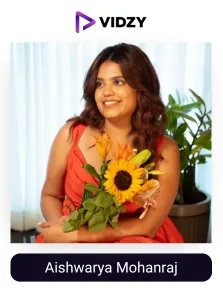
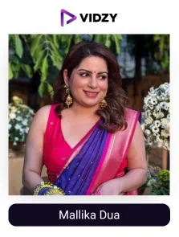
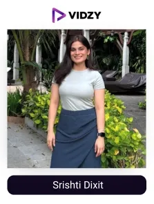

Comedy is a fun way to connect people of different cultures and beliefs. It breaks the ice, lightens the mood, and creates a sense of shared joy and connection.
India, in particular, has a deep-rooted love for humour. From packed stand-up shows in major cities to viral comedy sketches on social media, laughter is everywhere. According to Statista, comedy is also one of the most powerful and engaging content genres in India, making it more fun, enjoyable, and memorable.
By drawing inspiration from everyday experiences, present issues, and societal observations, the comedy UGC creators in India create humorous and relatable content and share it with their audience on various digital platforms.
Comedy UGC creators with their witty, relatable, and entertaining videos grab audience attention instantly and make brand messaging feel fun and trustworthy rather than forced. This playful and humorous approach enhances the brand’s visibility and engagement, influencing consumers' purchasing decisions and ultimately boosting sales.
One such example is of KFC India. They have effectively utilised comedy influencers in their marketing campaigns to engage younger audiences through humor and relatable content. They launched the "Taste the Epic" campaign, collaborating with comedians Samay Raina, Ashish Solanki, and Sharon Verma, where the trio used their humor and creativity to deliver entertaining content. This video gathered over 4.5 million views within 24 hours, demonstrating the potential of comedy creators in boosting brand visibility and driving conversions.
Let us have a glance at who these comedy UGC creators are and how they can help brands achieve their goals.
Who are Comedy UGC Creators?
Comedy UGC creators are individuals who, with their creativity and talent, create the most entertaining and enjoyable content. The funny, humorous, and entertaining content is shared with their audience on social media platforms with their audiences. Comedy creators create content of various types. Some share their talent in stand-up comedy shows and parodies, while some create spoofs and relatable sketches to entertain their followers. They create content on the latest trending topics, various societal issues, the relatable situations people encounter in their lives, and sometimes involve comedy in their own everyday life. Their relatable and fun-packed content easily resonates with their audiences.
Comedy UGC creators have become a powerful force in promoting relatability and engagement as brands continue to leverage the potential of user-generated content to improve their online visibility. Brands are using comedy creators to establish more memorable and genuine connections with their consumers by putting effective UGC strategies into reality.
As the best UGC agency, we have presented a well-researched list of the top comedy UGC creators in India for brands to boost their brand awareness, establish an authentic connection, and drive conversions and ROI.
Top Comedy UGC Creators in India
Contents
-

1. Aishwarya Mohanraj
Channel: Aishwarya Mohanraj
Followers: 734KEngagement Rate: 8.60%About The Influencers-
Aishwarya Mohanraj is one of the top comedy content creators in India. She is a talented stand-up comedian and a writer. She was one of the top 10 contestants of the show Comicstaan, a comedy stand-up competitive show. Her contributions as a writer consist of various shows, including Son of Abish, Behti Naak, On Air with AIB, Comicstaan Season 2, and One Mic Stand.
Aishwarya has also appeared on Amazon funnies, a miniseries featuring the top 14 comedy influencers of India. Her Instagram posts show glimpses of her stand-up performances, personal milestones, and candid moments with friends and family.
-
2. Rahul Subramanian
Channel: Rahul Subramanian
Followers: 914KEngagement Rate: 5.00%About The Influencers-
Rahul Subramanian is a famous stand-up comedian and content creator from India. He is well known for his sharp observational humor and engaging stage presence. He started his comedy journey with his YouTube channel Random Chikibum and later released his stand-up special Kal Main Udega on Amazon Prime.
He has also participated in various comedy competitions, including Comedy Premium League on Netflix. Rahil’s audience loves to engage and enjoy his stand-up clips and crowd work videos on his YouTube channel.
-
3. Swagger Sharma
Channel: Swagger Sharma
Followers: 670KEngagement Rate: 9.76%About The Influencers-
Shivan Sharma, known as Swagger Sharma on his social media handles, is a comedian, actor, and YouTuber. He is admired for his comedic sketches and web series. His Instagram bio itself shows his humorous side, which says Engineer who didn't get a job at Google is now making money by Google Adsense. His popular video Sugar Daddy has acquired over 14 million views.
His content is mostly created around relatable scenarios, which perfectly blends humor with everyday situations, and easily resonates with his comedy-loving audiences.
-

4. MALLIKADUA
Channel: MALLIKADUA
Followers: 1MEngagement Rate: 1.09%About The Influencers-
Mallika Dua is a popular comedy influencer, actress, and writer. Her sharp wit and relatable humor are very much enjoyed by her followers. She became famous with her viral video Shit People Say: Sarojini Nagar Edition, which she had wrote and performed.
She is also known for her character, Makeup Didi. She has also acted in films like Hindi Medium and Indoo Ki Jawani. Her audience loves to indulge in funny and entertaining comedy content
-

5. Srishti Dixit
Channel: Srishti Dixit
Followers: 739KEngagement Rate: 2.85%About The Influencers-
Srishti Dixit is a digital creator, comedian, and talented actress. She has become popular with her comedic sketches. One of her videos named If You Acted Like Poo In Real Life, has gone viral and grabbed many views. She co-hosted Netflix's series Behensplaining and had appeared in Amazon miniTV’s “Staff Room”. Her Insta bio humorously describes her as a "professional idiot on the internet."
Srishti also shares her thoughts on mental health awareness, body positivity, and feminism on her media platforms.
-
6. Kenny Sebastian
Channel: Kenny Sebastian
Followers: 1MEngagement Rate: 12.77%About The Influencers-
Kenny Sebastian is an Indian stand-up comedian. He is well-known for his amazing comedy skits and stage presence. He blends seriousness with humor in his social media posts and live performances. He has performed in many countries. His comedy specials include Don't Be That Guy on Amazon Prime Video and The Most Interesting Person in the Room on Netflix.
He has co-written and starred in the web series "Star Boyz" and created the series “Die Trying”. He was also a judge on the comedy reality show called Comicstaan.
-
7. Rahul Dua
Channel: Rahul Dua
Followers: 835KEngagement Rate: 4.59%About The Influencers-
Rahul Dua is a famous stand-up comedian from India. He is also a talented actor, writer, and host. He was a part of Amazon Prime's "Comicstaan" and has also performed in Netflix's "Comedy Premium League". He was the host of the show "Shark Tank India" Season 2.
He content shows his performances, everyday experiences and behind-the-scenes moments. Rahul Dua's most viewed Instagram video is a comedic sketch that had more than 20 million views.
-
8. Sukriti
Channel: Sukriti
Followers: 1MEngagement Rate: 12.05%About The Influencers-
Sukriti is a content creator and former radio jockey. She shares a variety of content, including vlogs, lifestyle posts, and comedic sketches. She always introduces new concepts in her creative content. Her pretty face hides a versatile entertainer who can turn relatable moments into entertaining comedy sketches.
Sukriti can portray multiple emotions through a single character.
Her content has been featured in various media outlets. Her videos are very entertaining and spontaneous, letting her followers have unlimited fun and laughter.
-
9. Viraj Ghelani
Channel: Viraj Ghelani
Followers: 1MEngagement Rate: 5.05%About The Influencers-
Viraj Ghelani is a popular digital creator known for his comedy videos on trending and relatable topics. He collaborates with celebrities from movies, cricket, and more, making him a top Instagram comedian. Many leading brands also partner with him regularly.
Viraj has acted in web series named "Little Things" and "What the Folks," and has made his Bollywood debut in the film "Govinda Naam Mera." He is well known in his comedy videos on YouTube channels like Dice Media, Gobble, and FilterCop.
-
10. Gaurav Kapoor
Channel: Gaurav Kapoor
Followers: 1.2MEngagement Rate: 10.61%About The Influencers-
Gaurav Kapoor is an Indian stand-up comedian, famous among his audience for his observational humor. His content consists of his live show updates and comedy snippets. He regularly uploads new and hilarious content on his Instagram handle. He also updates his followers regarding his upcoming shows and how the previous shows went.
The comedian has punchlines on point, which brings forth a wow reaction from his audience. His ability to stay respectful and witty at the same time makes his comedy a favourite amongst all.
Conclusion:
In India, comedy UGC creators entertain their audiences and effortlessly keep them engaged with their fun and humour-packed content. With stand-up comedies, spoofs, sketches on related situations, and parodies, they create a world of laughter and entertainment, which brands can utilise to incorporate their message with ease and connect with their audience effectively, thereby achieving impactful results.
The best UGC agency in India, Vidzy, can connect you with talented, fun-packed comedy creators, whose humorous touch can elevate your marketing efforts and help you gain results like never before.
Partner with Vidzy today and take your brand to new heights!